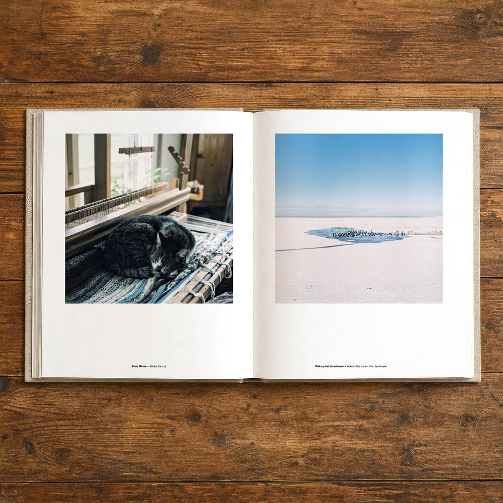

Speciale Editie
- Exclusief voor €125
- 25 gelimiteerde exemplaren
- Boek + twee prints, 30 x 30 cm
- English & Nederlands
- Genummerd boek en prints
- Gesigneerd door Loek & Jasper



Een jaar rond de vuurtoren van het Friese Workum — Aan de rand van het IJsselmeer, waar land, wind en water elkaar voortdurend raken, leven Cornelie en Reid († 2020) al decennia in het ritme van deze plek. Hun wereld beweegt mee met de seizoenen: met dieren en tuin, oogst, stilte, storm. Zo ontvouwt zich een bestaan dat zeldzaam is geworden: eenvoudig, zelfvoorzienend en diep verbonden met de natuur.
Vier seizoenen lang keerden fotograaf Loek Buter en Jasper Hauser, Reid’s kleinzoon, terug naar de vuurtoren. Loek — tweevoudig Zilveren Camera-winnaar — fotografeerde met zijn middenformaatcamera, langzaam en aandachtig. In zijn eerste fotoboek komen die beelden samen met persoonlijke teksten van Loek en Jasper, over herinnering, perspectief en de vraag wat een plek door de jaren heen in zich bewaart.


Gepubliceerd in:


De drukker Printer Trento is momenteel bezig met het binden van de boeken. We hebben alle drukproeven goedgekeurd en de boeken zullen binnenkort worden verzonden, en zullen zoals de planning er nu naar uit ziet 2 Juni in Nederland aankomen. Daarna zullen we je per e-mail op de hoogte brengen van de verzenddatum.
De standaardeditie is de reguliere hardcover voor de brede reeks liefhebbers (oplage 750). De speciale editie is een oplage van 25 exemplaren, en komt samen met twee gesigneerde prints en een genummerd, gesigneerd boek voor verzamelaars.
Ja — de editie wordt uitgegeven met teksten en typografie voor zowel Nederlands als Engels.
Verzending binnen Nederland is in de voorverkoopprijs inbegrepen. Je kunt het boek ook binnen Europa of Amerika bestellen en laten verzenden naar je adres, alleen de prijs voor verzendkosten wordt dan anders.
Het boek bouwt voort op de seizoensreeks, maar is een eigen verhaal met geselecteerde beelden, uitgebreide reproducties en fotografisch vakmanschap in druk voor op de plank — meer dan een papieren versie van de site.
Nee, het boek is alleen te bestellen als hardcover. We hebben het boek in een digitaal formaat gepubliceerd, en dat is te downloaden via de website.
We zijn bezig om het boek in de winkel te krijgen, maar dat is nog niet klaar. We zullen je per e-mail op de hoogte brengen wanneer het boek in de winkel is te koop. Daarnaast zijn we ook bezig het in online boeken winkels als bol.com en amazon.nl te krijgen.
Ja, zeker je kunt het boek in je winkel verkopen, we zouden het geweldig vinden als je het boek in je winkel aanbiedt. Neem contact op met info@devuurtorenrond.nl voor meer informatie.
Lees de oorspronkelijke online verhalen en ontdek hoe het project door de seizoenen groeide.


National Geographic Magazine Nederland
Autarkie als ambacht - 06/2021

volkskrant.nl
Rond de Vuurtoren - 11/2021

National Geographic Magazine China
Around the Lighthouse - 06/2022

GEO Magazine - Germany
Die Hüterin des Deichs - 09/2022

Floortje blijft hier - bnnvara.nl
Op bezoek bij Reid & Cornelie 11/2020

museemagazine.com
Photo Journal Monday - 06/2022
Jasper Hauser — is de kleinzoon van † Reid de Jong en is technologieondernemer en oprichter van onder andere de met een Apple Design Award bekroonde fotobewerkingsapp Darkroom. Hij is gespecialiseerd in digitaal productdesign en strategie. Hij studeerde fotografie aan de Fotoacademie in Amsterdam en grafische vormgeving aan de Hogeschool voor de Kunsten Utrecht.
Loek Buter — is documentair fotograaf voor National Geographic Magazine, de Volkskrant, Trouw, Stern en GEO Magazine. In zijn fotografie ligt de focus op de relatie tussen de mens, natuur en het Hollands landschap. Zijn fotoseries vielen meermaals in de prijzen bij de Zilveren Camera en werden tentoongesteld in de Kunsthal Rotterdam en het Fotomuseum Den Haag. Hij studeerde aan de Fotoacademie in Amsterdam. Met zijn vrouw en drie dochters woont hij op een kleine boerderij in Noord-Holland.